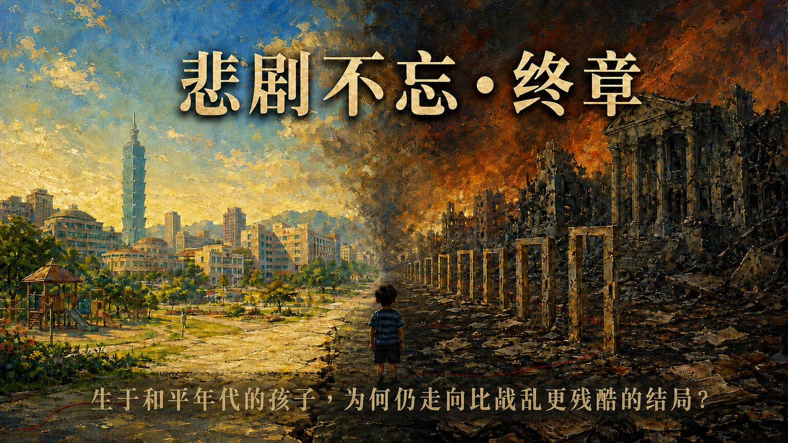

已由裁判处理
以法院新闻稿或裁判摘要为准；一审与定谳分开标示。

“悲剧不忘•终章”及警句为倡议文字，非法院判决用语或医学比较；和平城市与战后废墟为象征性公益艺术，非真实肖像、案件现场或证据影像。
FINAL CHAPTER · 2022.02.21—2023.12.24
资料核对至 2026.08.28
用十日庭审留下的证词、鉴定与陈述，重建一个孩子从出生、照顾转换、等待出养到离世的生命轨迹；再把刑事责任、行政违失与制度灰区分开检验。
孩子不是在单一制度里消失。
他穿过了每一个制度，却没有被任何一个制度完整看见。
本页涉及儿童不当对待与死亡，但不展示伤势照片。页面不以倡议推论取代法院认定，也不把机关改善视为个案因果的自白。若你需要暂停，可以先阅读证据标示或直接前往制度改善。
十日公开旁听纪录不是一份判决，行政纠正也不是刑事定罪。本页用六种标签，让读者知道每一句结论能走到哪里、不能走到哪里。
以法院新闻稿或裁判摘要为准；一审与定谳分开标示。
只代表该证人在其时间、空间与感知范围内所述。
旁听文字、契约、照片、访视或医疗纪录的公开描述。
用于行政责任与制度缺失，不直接替代刑事判断。
与监察院认定并列，保留彼此差异，不自行裁决。
公开资料不足以回答，明列缺少的文件或查核方式。
以下依监察院纠正案文建立日期骨架，再用 DAY2—DAY9 的证词补入孩子的发展、照顾与被看见的方式。出生及离世当日均计入，共672个日历日。
显示 12 个生命节点
监察院纠正案文记载，母亲向新北市树莺社福中心表示无力扶养腹中胎儿、希望出养；1月28日以脆弱家庭服务开案。
DAY8中，外婆说母亲无法照顾，自己曾实际照顾约两个月；这段证词说明家庭接住孩子的起点，也呈现家庭的工作与经济压力。
树莺社福中心转介多家合法媒合服务者，由儿福联盟接案并指派社工。这是地方脆弱家庭服务与中央许可民间媒合制度第一次交会。
DAY3记录萧○香依资料确认照顾期间为5月4日至6月29日。她提到婴儿期手脚较紧绷、曾按摩并回报，但没有描述后来所见的长期站立、自伤或多处伤势。
周○描述孩子会走、会玩、会说简单词语，日常健康活泼；外婆称每月探视两次以上。原公开纪录同段出现8月30日与31日两个终止日期，因此保留一日差异。
5月8日改定由外婆担任监护人；6月21日新北再次转介儿福联盟；7月18日签署出养媒合服务契约。孩子的法律身分与照顾安排同时进入重大转换。
外婆、儿福联盟合作保母与儿福联盟三方签订家庭托育契约。周○说照顾细节主要交给社工，与后手保母没有充分交谈；外婆说更换原因是出养需要与儿福联盟配合的保母。
监察院指出，儿盟社工9月25日访视照片可见额头明显瘀伤；9月26日台北市文山区居托中心完成新收托访视，纪录却未载异状。台北市后续回应称当日访视频率、地点符合中央规范且访员未见异常。
监察院记载社工观察到安静、无精神，保母以刚睡醒解释。DAY2中，住家看护Mira描述她在特定时段所见的站立、饮食、洗澡与身体变化；她也明确表示不能确认曾到访的正式穿着者就是社工。
保母先向社工表示孩子掉牙；翌日于公园访视，之后由保母转述牙医说法。监察院另指出基层医事人员未敏感辨识与年龄、描述不符的风险。公开资料仍不足以完整重建就医当日看见了什么、问了什么、记了什么。
保母以其他收托儿童生病为由请社工择日再访，后续以LINE、电话回报；社工未再亲见孩子。这不是「没有联系」，而是联系没有恢复成能直接确认孩子状态的访视。
国民法官法庭认定，孩子在长期营养不良与至少42处虐待性伤势等情况下，因低血容性休克死亡。刘彩萱无期徒刑、刘若琳18年有期徒刑，于2026年7月23日定谳。
这不是逐分钟重演，也不是替卷证补写情节。以下只把法院已认定的时间边界、公开庭讯片段与医学机转放在同一条线上；每一步都标明证据强度。
DAY9中，检察官问刘彩萱是否曾向辩护人表示A童“中午以后活动力不佳”，她回答“有”。这可支持下午已有明显状态变化，但仍是被告回答，不是连续医疗监测。
DAY9 C51｜查看原问答台北地院一审新闻稿将共同凌虐、伤害与限制自由的犯罪期间认定至12月23日晚间10时许。这是一段期间的终点，不等于法院已公开认定“10时整发生某一个特定动作”。
法院新闻稿 ↗DAY1公开旁听纪录载有12月23日对话：“没心跳了”／“继续救”；不争执事项另载刘彩萱配偶替孩子做CPR并拨打119。这证明危急后的救护节点，不能反推心跳停止前的完整经过。
DAY1｜不争执事项与对话纪录法院认定长期营养不良、身体衰弱及至少42处虐待性伤势，最终造成组织细胞血液灌流不足与低血容量性休克。DAY5医师证词同时说明深部出血、水肿、束缚、久站与营养状态的累积机转。
DAY5｜死亡机转在最后一日前，孩子已有长期身体伤害、营养不良、衰弱、精神创伤与未积极就医的累积；最后一日的活动力下降与休克，是这条累积伤害链的末端。
从中午后活动力不佳，到后来无心跳才出现的公开救护纪录，可合理推论危急恶化不是在送医瞬间才开始。若更早接受完整评估与医疗，可能存在不同的救援机会；但公开资料不能量化概率或确定哪一分钟仍可逆转。
现有公开材料不能确定最后一餐、最后一次伤害、每项伤势的形成时间、每分钟在场者、心跳停止的精确起点，或哪一名被告在最后数小时做了哪一个动作。
以下依DAY5吕立医师与许倬宪法医师的公开庭讯整理。示意图只标示身体区域，不呈现写实伤口；同一区域可能有多处、新旧不同的伤势，已愈合而看不见者也不在“至少42处”之内。
陶土人物不是伤口照片，也不是按比例重建；编号与艺术人形只协助读者理解“全身性、多区域、累积性”的医学证据。
两侧额部头皮出血、头皮多处皮下出血；额部瘀伤、左眼皮整片瘀青、两耳含耳廓内侧伤痕、脸颊勒痕，以及鼻孔两侧严重伤势。医师认为多项位置与形态不符合一般意外或单纯自撞。
嘴唇瘀伤、左嘴角裂伤，上牙龈、系带与嘴角黏膜严重受损；PMCT显示下排3颗门牙断裂、1颗连牙根脱落，另有断痕已被牙龈长回包覆。医师排除蛀牙与磨牙造成这种结果。
颈部大片瘀伤与刮痕、左肩大片瘀青；影像显示左肩胛骨喙突骨折。法医另记载颈、胸、腹、背部表层皮肤瘀伤，但体腔没有出血。
双上肢均有瘀伤；右手掌至手指为重大外力造成的深伤，涉及皮下组织与指甲沟。左前臂部分伤势可能与急救点滴有关，其他范围则不能由点滴完整解释。
左下腹有瘀伤；医师指出腹部柔软、骨骼在后方，要相当外力才会形成该处出血瘀青。照片与生长曲线另显示慢性营养不良、体重与身高区间下滑、肋骨明显及体形消瘦。
臀部下缘皱褶被医师视为营养不良表征；阴囊左侧与生殖器有新旧伤痕、刮伤与深裂伤。鉴定意见列为高度疑似性虐待，但特别说明不必然具有性意涵。
右腿解剖测得约13厘米瘀伤；脚踝肿胀较符合捆绑与久站脉络。足底伤势无法分辨是捆绑或殴打；常见意外部位如小腿，伤痕反而不明显。
法医将外力、束缚与久站造成的出血、水肿和软组织液体淤积，连到血管内液体不足、器官灌流下降与低血容量性休克；营养不良降低身体承受力，两份鉴定对其在死因排序中的表述略有不同。
“看起来像饥荒儿童”是外观比喻，不是诊断名称。剀剀的照片在不同日期呈现不同阶段，不能用单张影像把整段病程固定成同一种外观。
吕立医师说明，12月3日照片已可见营养不良，当时“肚子鼓尚未消、脸变小，之后会凹下去”；同一段回顾也描述后期肋骨清楚、腹部不再维持鼓胀。这表示外观会随失养与体液状态恶化而改变。
严重急性营养不良可伴随双侧凹陷性水肿。蛋白质／白蛋白不足可能降低血管内胶体渗透压，使液体进入组织或腹腔；水肿、腹水与肌肉脂肪流失，都可能让腹部相对突出。WHO也指出合并严重水肿的营养不良儿童死亡风险更高。
DAY5记载先前医院没有做白蛋白检测；公开庭讯也没有以完整腹部超声、白蛋白、肝肾功能与腹水分析确认单一原因。气体、粪便、姿势、器官肿大或体液也可能影响外观，不能从一张照片下诊断。
左右对话框不是让证词互相抵销，而是把时间、观察范围与证据界线放在同一画面。文字采忠实摘意；完整问答请回原庭期。
孩子会走、会玩；外婆形容健康、活泼、调皮。
DAY3证词与行政调查出现长时间站立、安静无精神、消瘦等变化。
DAY2奶量等细节主要告诉社工；与后手保母没有充分交谈，只请她多爱、多疼、多抱孩子。
查看原问答把交接不足、分离焦虑与支持系统不足列为解释或量刑脉络。
查看辩论她曾看见一名穿着正式的访客，但明确说不能确认对方是否为社工。
查看证词界线儿盟与居托中心各有具日期的访视纪录；每次看见的场域、孩子状态与查核方法并不相同。
监察院资料 ↗谈到其他收托儿童受伤时会拍照、记录或回报；本案却出现担心被停止派案、失去收入的说法。
DAY9｜收入与隐瞒两名被告的具体参与与共同犯意，已由法院依对话、影像、证词及鉴定综合判断。
法院新闻稿 ↗后期资料出现自撞、害怕衣架、适应不良等说法，部分由保母转述给社工。
DAY7｜跨证词核对前保母未见相同行为；法医、儿保医师与儿童精神科医师要求把伤势、营养与长期情境一起判读。
DAY6｜证据链承认部分捆绑与不坦诚，并说「是我造成的」「是我的错」；其他行为仍有否认或不同解释。
完整问答否认共同犯行，承认删除对话并称部分行为需要修正。
完整问答以下把DAY2—DAY9实际出现的生活证人、被告证述与鉴定意见全部列回来。DAY1是程序与争点、DAY10是科刑论告，没有新增证人。
晚期住家内的日常片段、声音与空间；不能确认未亲见行为或访客身份。
最长一段交接前照顾、健康发展与探视基准；起讫日期保留一日落差。
约4至5个月大时的短期全日托育、手脚紧绷与回报；不能延伸到后期。
后期住家内零散所见、哭声与物件；自述不参与照顾，也未必每日在场。
出生后照顾、家庭条件、出养决定、前段探视与事后修复界线。
同业照顾者的观察、行动与角色自述；多次回答遗忘，并持续否认共同犯行。
三处照顾动线、具体作法、通报与陈述变化；承认部分行为及不坦诚。
解剖、死亡机转与伤势型态；不以法医判断替代每一行为的法律评价。
伤势分布、营养与儿虐辨识；精确受伤时间仍有医学限制。
长期、多重不当对待及心理创伤的回溯评估；不诊断两名被告。
两名被告的个人情状、治疗动机与复归条件；不重写孩子的伤势与死因。
这是另案审理中的证人证述，不是剀剀主案十日庭讯，也不是完整逐字稿。以下依公开一审开庭纪录摘要与法院新闻稿，把证人的制度观点放在左侧、一审法院的判断放在右侧。
孩子在转换环境后可能出现退化、撞头等适应问题；伤势宜由医疗专业判断，通报需要明确证据；儿盟没有公权力，难以进行无预警访视，保母管理主要是居托中心责任。
新出现的瘀伤、消瘦、掉牙与精神状态改变，不能只以适应问题合理化。法院认为儿盟实际掌握合作保母名册、付款、访视、训练与终止合作等权限；即使不能强制入宅，仍可查证、比对、加访、要求就医或依法通报。
儿盟是连接托育资源，并非保母的主管机关；掉牙等状况应交由医疗专业判断，未必需要立刻增加访视或介入。
法院从招募评估、合作契约、名册、支付托育费、访视、训练与终止合作等实际运作，认定儿盟不是单纯媒介，而是对出养前照顾具有特殊职务义务的机构。主管后续也承认未查证、比对或增加访视等疏漏。
个案主责仍在树莺社福中心；儿盟承接收出养与照顾安排。她说督导工作存在，且调查摘要未必呈现全部原始纪录。
法院认为不能只靠“主责”名称切割实际义务：陈尚洁掌握孩子与保母状况并能亲自访视，仍须完成查证、追加访视、医疗确认与通报。若督导只依口头月报、没有完整检核原始纪录，实质把关就可能失效。
陈尚洁另案一审的主管证词，可用来检验制度内部如何理解权责、通报门槛与督导工具；DAY7原始庭审资料图则保留衣物血迹问题曾被提出的脉络。两者都不能越过各自的证据边界。
佐证儿盟对适应问题、通报门槛、公权力与合作保母管理的制度解释，可与实际掌握的名册、付款、访视、训练及终止合作工具相互检验。
佐证儿盟将自身定位为托育资源连结者的说法，可与契约、费用、访视及主管后续承认的未查证、未比对、未加访疏漏对照。
佐证树莺主责、儿盟承接收出养与督导纪录的分工说法，指出“谁主责”与“谁实际掌握警讯及介入工具”并非同一问题。

图中保留庭上对颈部受伤、衣物出现血迹，以及相关情况是否告知儿盟社工的提问线索。它能佐证“问题曾被提出”，不能单独证明血迹来源、伤势形成时间、严重程度或个人刑责。
白丽芳、李芳玲、江怡韵一审证词摘要＋台北地院一审新闻稿
各单位如何理解主责、媒合、访视、通报与督导，以及谁实际握有资讯与工具。
直接行为人的具体动作、任何一人的终局刑责，或机构整体已受刑事定罪。
DAY7第52页资料图＋DAY4、DAY7公开庭审纪录中对照片、讯息与告知行动的描述
衣物血迹与是否告知社工是庭上被检验的知情、照护及通报节点。
血迹来源、受伤工具、精确时间、严重程度，或由哪一人造成。
主案定谳裁判、十日庭审纪录、陈尚洁另案一审与行政调查
同一孩子的照顾资讯如何在家庭、保母、儿盟与地方政府之间断裂。
把主案、另案与行政责任合并成一条相同法律责任。
DAY1到DAY10不是十份同质的“证人证词”，而是程序基础、生活证人、医学鉴定、被告陈述与科刑主张逐层累积。以下可依阅读时间切换深度，再由争点反查每一日来源。
切换只改变本区呈现深度，不删除资料，也不改变证据状态。
三十分钟模式：显示三层证据状态、四阶段形成图与十项跨日勾稽。
“已确认”只写裁判已处理的犯罪事实；多源证词与行政资料另列，不借用法院权威。
每一阶段回答不同问题；后一阶段不是取代前一阶段，而是检验、补强或限制它。
固定照顾场所、犯罪期间、不争执事项、救护节点及六大证明争点，先界定法庭需要回答什么。
Mira、前保母、家中成年子女与专业保母，建立交接前后生活、发展与身体状态的落差，也标出各自没有亲见的范围。
儿保医师、法医与精神鉴定说明死亡机转及伤势型态；DAY7再把三处空间、被告陈述与检辩法律主张放回整体证据链。
外婆补入家庭与出养脉络；两名被告接受完整讯问；最后由检辩就参与程度、犯后态度与复归可能性提出不同刑度主张。
每一题都固定拆成“原始证词｜客观文件或医学证据｜不同说法或无法互证｜目前证据状态”，不让单一句话取代整条证据链。
生长资料、交接前后照片及DAY5医学证词呈现照顾转换后的重大落差；法院亦认定托育期间长期虐待与营养不良。
DAY5｜医学比较辩方与被告曾以分离焦虑、适应退化或既有自伤解释部分行为；公开资料没有同期诊断足以解释后来的全身伤势。
但不是逐日健康检查；可确认的是照顾前后巨大差异与后期伤害，不能把每一天都写成完全无病。
三方托育契约、照顾转换日期与既有健康资料可确认，但完整交接清单、签收及后手理解确认尚未公开。
DAY8｜照顾转换勾稽被告把部分饮食、情绪与适应问题连到交接不足；即使交接有缺口，也不能据此解释或正当化后续伤害。
仍需原始清单、面谈纪要、签收纪录与健康文件传递轨迹。
庭上曾出现自撞、磨牙、跌倒或转换环境退化等说法，也有证人表示没有亲见特定暴力行为。
儿保医师、法医与精神鉴定从伤势位置、深度、新旧分布及心理表征，排除以一般意外或单一自伤完整解释。
DAY5｜全身伤势并非每一处都能精确判定形成分钟、工具或单一行为人；“没看见”也不能证明伤害没有发生。
法院认定至少42处虐待性伤势及长期不当对待；个别伤势的全部细节不等于都已公开。
三处空间、对话纪录、照顾参与及医学证据共同形成法院判断；最终依参与程度分别判处无期徒刑与18年。
DAY7｜三处空间公开资料不能重建每一天、每一时段的完整在场表，也不能把所有伤势逐一分配给特定一人。
角色有主次不等于其中一人没有责任；分钟级在场与个别动作仍须保留证据界线。
法院将共同犯行期间列至晚间约10时，并认定孩子于24日凌晨因长期伤害、营养不良与低血容性休克死亡。
最后一日证据线公开纪录存在00:27与1:31的分钟差；无法确认最后一餐、最后一次伤害、心跳停止起点及最后数小时每人的动作。
本页统一使用“12月24日凌晨”，并把合理推论与法院认定分开。
删除原因、谁最终决定不就医、若更早介入能否在特定时点逆转，不能只由结果反推。
不能把删除自动等同全部犯罪故意，也不能把未通报缩成单一人的单一瞬间。
监察院纠正、卫福部七项查核缺失，以及契约、付款、访视与终止合作权限，确认不同单位各自掌握一段资讯与工具。
五层责任联动图台北市主张访视频率、地点符合当时规范；儿盟与主管证人强调没有公权力。是否合规与是否有效辨识风险是两个问题。
不能把行政纠正写成刑事定罪；也不能因直接行为人定谳，就结束制度问责。
主案共同正犯刑责已定谳；中央与地方行政违失另由监察院处理；儿盟流程缺失由卫福部查核；陈尚洁是另案且法律状态须独立标示。
制度已修正不等于个案因果自白，也不能证明同类风险已消失；仍需拒访、漏访、共访与警讯升级成效。
不同法律轨道各有证明标准；终章的工作是并列、勾稽与指出缺口，不替尚未完成的程序下结论。
以下保留每日程序性质与完整来源。律师论告、被告陈述、证人证词与鉴定意见仍以不同证据类型呈现。
公开庭讯同时出现北投宫庙、收惊与法会、睡眠控制，以及刘彩萱如何接触励馨与儿福联盟的说法。人物与时间有交集，不代表宫庙曾指示剥夺睡眠或参与收出养媒合；以下逐条拆开核对。
称法会由宫庙师姐建议；被问目的时回答，既有希望不要入监，也有希望孩子被引渡、超度的意思。
C52｜查看原问答称宫庙主委说法会需要30万元，也提到“一个孩子死在你们手上”；但她说刘彩萱没有向她解释借款目的。
R01｜查看原问答称总额30万元，其中10万元来自“儿盟给我的”、10万元由刘若琳负担，另10万元由主委免除；又称自己无力负担，需要刘若琳协助。
C70｜查看原问答说明借款与部分参与，但对借款理由、法会意义及后续家属修复的回答，与刘彩萱并不完全相同。
R21｜查看原问答举办法会、支付费用或持续参与宗教活动，可以作为法院观察犯后行为的一项素材。
仪式不能取代向家属道歉、说明事实、赔偿、修复或承担责任；若同时具有避免入监的目的，更不能自动等同真诚悔悟。
12月3日对话出现“我每天为了不让他睡，结果自己也不能睡”；DAY4法官再提示“我睡着他才有机会睡、为了不让他睡我也没得睡”。这句话只能归属刘彩萱，不能扩写成两名照顾者都如此表示。
DAY1｜查看对话纪录刘彩萱先后以孩子不睡会自撞、不太好睡、取消午睡以调整夜间作息等说法回应；公开纪录没有厘清每一次的动机、频率与时长。DAY6鉴定则把剥夺睡眠放入长期精神虐待脉络判读。
DAY4｜查看法官追问DAY6｜精神虐待判读她称因“宫庙女儿、友人赖小姐”曾照顾励馨的孩子而获建议，先致电励馨；对方表示当时没有孩子可承接，可先跑申请流程并提供其他机构资讯，之后她再主动联络儿福联盟。
C36｜查看原问答家庭端是生母向新北树莺求助，树莺转介儿盟、励馨与天主教福利会，最后由儿盟接案；保母端则是刘彩萱自述的主动接洽路径。剀剀有生母，后由外祖母担任监护人；他是“待出养儿童”，不是“孤儿”，刘彩萱也不是收养人。
监察院调查报告 P.7–8、35–40 ↗庭上存在法会与30万元说法、睡眠控制对话，以及刘彩萱先问励馨后联络儿盟的自述；法院已将不能安适睡眠纳入不当对待评价。
睡眠控制的逐次动机、频率与时长；款项来源、收据与用途；合作保母申请、审查、训练与派案的完整原始文件。
不能认定宫庙指示虐待、剥夺睡眠或参与媒合；也不能把待出养儿童写成孤儿，或以宗教活动直接推定悔意。
“未清”不代表所有答案都未知，而是十日庭审与目前公开文件仍不足以完成制度问责。每题列出已知、缺口与下一份应出现的证据。
周○称奶量等资讯主要交给社工，与刘彩萱未充分交谈；辩方则以交接不足作为脉络。
完整交接清单、健康检查、签收纪录、面谈纪要与后手理解确认。
监察院指出前一日照片有明显额头瘀伤，次日居托访视纪录未载异状。
原始照片时间资讯、完整访视表、现场动线、询问对象与逐项查核方式。
DAY1、DAY4与DAY7确认三处场域及两名被告在不同程度上的出入与照顾。
逐日位置、过夜、交接、在场者与主管机关是否知悉非登记处所的完整对照。
多个警讯曾被看见或转述，但当时未启动足以直接确认安全的跨体系处置。
当时各单位的书面风险门槛、督导决策纪录与未通报理由。
之后以LINE、电话回报，儿盟社工没有再次亲见孩子。
延期访视的最长容许时间、督导提醒、替代访视与拒访升级程序。
外婆说因不舍而未探视；周○说曾要求探视但未成；契约上的保母地址、电话填儿盟办公室。
亲情维系计划、探视申请纪录、联络资讯限制的依据与替代监督设计。
监察院指出居托访视纪录与起诉书所载实际无A童日志存在落差；台北市称访员当时未特别检视纸本或手机。
原始日志、数位纪录、抽查标准及虚假或缺漏纪录的升级规则。
卫福部查核儿福联盟七项流程缺失；社工另案一审被判过失致死，伪造文书部分无罪。
上诉终局结果、组织督导与董事会责任、独立稽核结果及对外透明度。
监察院于2026年7月22日将纠正案结案，记载法规研修、三方共访、资讯共享与查核改善。
拒访率、漏访率、警讯升级时效、跨县市共访覆盖率及第三方成效评估等公开指标。
两名被告都提到法会、出资或借款；刘彩萱并说明包含避免入监与超度孩子等目的，两人的告知内容并不完全一致。
汇款、收据、借贷与款项性质文件，宫庙承办者完整说明，以及法会、赔偿、和解和家属修复之间是否存在可证明的连结。
对话与庭上提示可确认睡眠控制话语；法院已把迟至深夜入睡、不能安适休息列入不当对待。刘彩萱曾提出自撞、难入睡与调整作息等不同说法。
逐日作息、照片与讯息完整时间轴、每次在场者及连续时长；现有纪录也不足以把睡眠控制归因于宫庙。
刘彩萱称受友人建议先询问励馨，再主动联络儿盟；监察院记载合作保母多为主动接洽、经访视及会议后列入名单。此为保母端路径，与家庭端由树莺转介多家机构不同。
励馨通话与转介纪录、申请表、访视评估、会议纪录、训练与风险审查资料；待出养儿童不等于孤儿，也没有证据显示宫庙参与机构审查。
刑事责任、行政违失、组织流程与政策监督采用不同证明标准。案发时教育部主管儿盟的基金会法人治理，卫福部另主管收出养业务；地方再分由新北掌握家庭、台北监管居托。剀剀永远是权利主体，不是责任链末端的一个案件编号。
刘彩萱儿盟合作保母＋台北市登记托育人员
关系校正文山居托依台北市社会局委托办理访视；不是社会局直接委任刘彩萱。
安置先回答“孩子今天由谁照顾”；收养则改变“法律上谁是父母”。法律路径、照顾场域与长期目标是三件事，不能只用“住在谁家”或“住了几天”判断。
儿童未受适当照顾、遭遗弃或虐待等情形，地方主管机关依《儿童及少年福利与权益保障法》第56条保护或安置；紧急安置不超过72小时，需要继续时须由法院裁定，每次最长3个月。
家庭重大变故时，可依第62条向地方主管机关申请安置或辅助。家外安置的照顾场域很多；同样住在家庭里，也可能是亲属照顾、寄养或一般托育，权限与支持并不相同。
长期目标可能是安全返家、收养、第三方监护／监护移转，或建立持续稳定的重要成人关系。收养须书面并经法院认可；法律亲子关系才因此改变。
监察院认定，这不是新北市依第62条介入的公权力安置，而是儿福联盟依当时媒合服务规范安排的“媒合服务者自行安置”：由外祖母、儿盟合作保母刘彩萱与儿盟签家庭托育契约，提供24小时全日照顾。名称是托育，生活实质却已是孩子长期离开家庭的家外安置。
案发时一般居家托育管理、民间出养媒合与地方脆弱家庭服务各走一轨，未自动取得法定寄养同等的支持、共访与安全复核。
现行制度2025年9月4日修正后，媒合机构接获出养需求，须通知儿童居所地地方主管机关进行出养必要性评估；并新增儿虐辨识训练与内外部督导要求。
保护安置、申请安置与媒合机构安排的出养前照顾，决定者、法院角色与公权力介入程度不同。
孩子24小时住在照顾者家，不代表照顾者成为父母；谁能探视、同意医疗、取得地址与停止安排，必须明确。
一般居托规范本为通常托育设计；若用来照顾待出养、脆弱家庭幼童，却没有寄养等级的训练、喘息与风险支持，就会出现落差。
儿籍地掌握家庭，媒合机构安排照顾，托育地监管保母；若没有共同名单、共访与伤势核对，每端只会看见一小段。
没有明确返家、收养或监护计划与定期复核时，短期照顾可能一再延长；移动越多，幼童的依附与发展风险越高。
剀剀没有进入第62条公部门申请安置，而由儿盟安排合作保母。新北家庭端、儿盟媒合端、台北居托端各掌握一部分；监察院指出跨县市通报、共同访视与资讯流通均有缺口。
完整调查报告 ↗监察院调查一名出生不久即委托安置的女童：2岁返家后不到1年再因严重受虐而安置，显示返家评估、外部审查、家庭支持与后续追踪若未闭合，孩子会在转折点失去保护。
监察院制度调查 ↗监察院指出，地方社政家外安置仍以委托安置占多数，其中逾5成安置超过2年、逾3成为学龄前儿童。这是截至2021年底的制度快照，不是现况比例；时间变长，也不会使法律身份自然变成永久家庭。
监察院返家机制调查 ↗问题不只是“有没有访视”，而是谁能把家庭史、收出养安排与托育现场放在同一张风险图上，并在警讯出现时采取可验证的升级行动。
角色：提供脆弱家庭服务，处理原生家庭需求、监护变更与资源连接，并两度转介儿盟办理收出养。
资讯位置：掌握家庭求助历程、孩子先前稳定照顾史，以及转介前后的家庭条件。
未闭合处：监察院认定新北在转介后多被动接收儿盟资讯，刘姓保母照顾期间未亲见孩子、未形成共访或风险会议。
角色：办理媒合儿童收出养、家庭联系、访视辅导与出养前身心状况追踪，是跨单位资讯汇流位置。
资讯位置：2023年9月25日、10月23日、11月20日三度访视，先后看见或得知瘀伤、消瘦安静与掉牙等警讯。
未闭合处：一审法院认为仍可比对前保母、要求医疗确认、增加访视、通报或更换照顾者；但此为特定个案的一审判断。
角色：依居托中心职务访视登记托育场所，观察保母与环境、儿童外观发展及生活作息，并核对照顾纪录。
资讯位置：文山于2023年9月26日办理新收托访视；监察院指出纪录未呈现前一日照片可见的额头瘀伤，且日志栏位未实际核对。
未闭合处：儿盟照片、保母说法与居托纪录没有被交叉验证，台北市的委托访视与督导也未把异常升级成保护处置。
家庭、媒合与托育监管各握一段，没有单一节点持续统整孩子安全。
家属与新北仰赖儿盟回报；居托访视又主要接收照顾者现场说法。
瘀伤照片、掉牙、消瘦、日志与前照顾史，没有和医疗或另一套访视纪录完整比对。
未及时形成加访、共访、就医确认、换保母、保护通报或公权力安置的连续处置。
每一端都看见局部，但没有任何一端把局部警讯闭合成可立即救援的全貌。
同一个孩子同时落在法人治理、收出养服务、脆弱家庭服务与居托监管之中；名称相近，不代表权限相同。
案发时儿盟仍名为“儿童福利联盟文教基金会”，其基金会法人主管是中央的教育部；2024年9月3日起才改隶卫福部并删除“文教”二字。
教育部查核说明 ↗教育部管的是会务、财务、董事会与内控；卫福部依儿童保护法规许可、检查与评鉴收出养媒合业务。两条监督在案发时并存。
卫福部联合查核说明 ↗台北市社会局依制度委托文山居托中心执行访视、辅导与管理；刘彩萱则是向台北市登记的托育人员，两者不是“社会局直接委任保母”的关系。
监察院调查报告 P.24–27 ↗树莺将家庭转介给儿盟；儿盟承接收出养服务后，安排合作保母刘彩萱提供出养前全日托育。监察院记载，剀剀不是由文山居托媒合收托。
监察院调查报告 P.2、25 ↗剀剀是在等待收出养媒合期间接受全日托育；刘彩萱的角色是儿盟合作保母与登记托育人员，不是出养家庭，也不是收养人。
监察院纠正案文 ↗施盈如是证人而非被告；林心慈遭起诉但尚未判决；陈尚洁一审判2年、伪造文书部分无罪，检辩均上诉。只有刘姓姐妹主案刑责已定谳。
陈案一审新闻稿 ↗实线表示可由公开文件确认的法定、契约或实际工作连接；虚线表示当时应形成、但监察资料显示未完成的共同访视与资讯闭环。
这棵树回答“每一层本来能做什么、掌握什么、断在哪里”；教育部在案发时对儿盟的法人治理则作为旁轴呈现。层级不是责任等量表，也不表示上层必然造成下层犯罪。
教育部在案发时监督儿盟基金会的会务、财务、董事会与内控；卫福部制定儿童保护、居托与收出养制度，并许可、检查及评鉴媒合服务者。
教育部以法人主管身份连到儿盟组织治理；卫福部向新北、台北提供制度规范，并对儿盟收出养业务行使许可与检查评鉴。
法人治理与收出养业务分属两部；案发后两部联合查核才分别查出内控治理与七项收出养流程缺失。2024年9月3日起儿盟法人主管改隶卫福部。
监察院正式纠正卫福部的收出养监督违失；教育部参与案后联合查核。两者皆不能与第5层已定谳刑责等同。
孩子出生、原生家庭需求、监护变更、前保母稳定照顾史及两次转介；可亲访、共访、召开个案会议或改采公权力安置。
树莺两次转介收出养服务给儿盟；转介后仍有整合家庭支持、追踪孩子安全与跨县市联络的位置。
9月1日转入刘姓保母后未亲见；10月24日收到适应不良警讯仍未共访、未联络文山、未开风险会议，资讯多仰赖儿盟单向回报。
正式被纠正的是新北市政府；施盈如在陈尚洁案以证人身份出庭，并非刑事被告。树莺也不是托育登记主管或直接行为人。
保母资格、登记地址、收托名单、环境安全、孩子外观／饮食／睡眠与日志；可无预警访视、限期改善或废止登记。
直接对刘姓保母执行登记、管理、辅导、监督、检查；并应与掌握同一孩子的儿盟、新北交换警讯。
9月25日儿盟照片有额头瘀伤，9月26日文山访视却未记载；表载每日填日志但未实查，案后才掌握非登记照顾场所。
正式被纠正的是台北市政府；文山居托是受托执行节点。林心慈为前访视人员，台北市社会局称其非社工；2026年6月遭起诉，仍未判决。
孩子成长、医疗、前后照顾环境、保母说法与访视照片；可招募审查、签约、付款、训练、加密访视、要求就医／日志、换保母或终止合作。
承接树莺转介；受卫福部许可监督；与刘姓保母形成招募、契约、费用及访视管理关系，并与文山共同掌握同一照顾现场。
警讯被解释或转述，未充分向前保母、医疗或另一监督体系查证；家属与新北社工又高度依赖儿盟回报，形成资讯闸门。
卫福部查核确认七项组织／服务缺失；儿盟不是监察院被纠正机关。陈尚洁个人责任为另案一审，仍由高等法院审理。
直接控制饮食、睡眠、活动、限制、伤势、就医与通报；也是儿盟与文山所接收现场资讯的主要来源。
受儿盟合作保母契约与管理，也受台北居托登记、访视与检查；两个上游都负有独立查核责任，不能只信口述。
两人共同故意对儿童妨害自由而凌虐致死；刘彩萱无期徒刑、刘若琳18年，2026年7月23日定谳。
这一层是已确定刑事责任。前四层的行政或组织责任不减免本层刑责，本层定罪也不会让前四层自动免责。
安全责任不是把孩子一层层往下交出去；每一层都应能直接回答：最后一次亲见是何时、异常如何验证、谁负责升级、何时送医或通报。
以基金会法人主管机关身份监督会务、财务、董事会与内控；不等同收出养个案业务主管。
法人治理与收出养业务分属教育部、卫福部；案发后联合查核才各自揭露缺失，2024年9月3日起法人主管改隶卫福部。
以中央法规、指引、督导与资讯架构规范地方脆弱家庭服务及居家托育监督。
事件当时跨县市共访、警讯共享与出养前全日照顾的公权力介入强度不足。
许可、每年检查、至少每三年评鉴收出养媒合服务者。
多年检查与评鉴未发现后来查出的七项流程缺失。
树莺以脆弱家庭开案，两次转介收出养服务；儿盟掌握媒合与照顾安排。
转介后新北多被动接收片面资讯，未共访、未开风险会议，也未在刘姓保母期间亲见孩子。
选任合作保母、签订契约、支付费用、进行访视、训练并可终止合作；此为陈案一审认定的重要实际控制关系。
警讯被解释或转述，未充分查证、比对、加访、确认就医或通报；陈案判决仍未定谳。
依居托制度负责登记、访视、辅导与监督；9月26日曾进行新收托访视。
未记载前一日照片可见的额头瘀伤，未实际核对A童日志，案后才掌握非登记照顾处所。
三方分别掌握家庭、媒合照顾与托育监督资讯，本应共同形成孩子安全全貌。
事件当时没有单一主责把三份资讯交叉验证；事后制度才强化跨县市三方共访。
掌握24小时全日照顾现场，直接决定饮食、活动、限制、就医与通报。
法院已定谳认定共同正犯；制度失灵不减免直接刑事责任。
订定儿少保护、收出养媒合与居托制度规范，协调监督地方政府，许可、检查与评鉴媒合服务者。
监察院认定其对收出养媒合监督不周；多年检查、评鉴未发现儿福联盟七项缺失，也未及时处理“名为托育、实质近似家外安置”的监管灰区。
2024年起由地方办理出养必要性评估，并修正跨县市共访、家外安置与媒合服务管理规范。
家庭在孩子出生前即求助并以脆弱家庭开案；树莺掌握原生家庭需求、监护变动与两次转介，是不能因委外就消失的公部门个案位置。
转介后被动接受儿盟决策与片面资讯；孩子进入刘姓保母照顾后未亲见，警讯出现后未共访或召开个案会议，督导核阅也有时间落差。
强化督导核阅内外控，参与跨县市三方共访与资讯共享。
负责刘姓保母的居托登记、管理、辅导、访视与检查；文山居托在9月26日完成新收托访视，是外部直接看见孩子的制度节点。
监察院认定访视管理流于形式：未反映前一日照片中的额头瘀伤、未实际核对A童日志，且案后才发现非登记照顾处所与不适幼童环境。
台北市主张当日属无预警访视，频率与地点符合当时中央规范，访员当下未见异常；此回应与监察院纠正并列保留。
全日托访视增至每年6次，建立延期／拒访因应，并对外县市待出养儿童采三方共访。
接受转介、评估出养、选任合作保母、安排出养前24小时照顾，并掌握家庭、保母、访视与地方社工之间的主要资讯流。
卫福部查出七项缺失，涵盖出养必要性、照顾品质、外部共同决策、家庭支持、社工训练、督导与内部稽核。
法院依招募、契约、付款、训练、访视与终止合作权限，认为儿盟并非单纯资讯中介；此判断用于审查陈尚洁个人作为义务，不等于已对法人或所有主管作刑事定罪。
监察院结案资料记载，卫福部督导改善计划，2024、2025年两度邀专家实地查核。
两人实际掌握照顾场所、饮食、活动限制、身体状态、就医与通报，是最接近危险、也最能立即停止伤害与送医的人。
法院认定两人为共同正犯，依参与程度分别判处刘彩萱无期徒刑、刘若琳18年有期徒刑，2026年7月23日定谳。
制度失灵不减免直接行为人的刑责；直接行为人被定罪，也不会使本来负有规范、主责、媒合或监督义务的其他层级自动免责。
这些不是抽象口号，而是由庭审证词、监察院纠正与机关回应交叉后浮现的结构性风险。
孩子24小时离开监护人接受替代照顾，却未获寄养安置同等监管与支持。
新北掌握家庭、台北监督保母、儿盟掌握日常资讯、中央监管机构，没有单一安全责任人。
监护人与新北社工无法直接取得保母地址、电话；当主要资讯只经一条路传递，第二道验证就消失。
有到场、有表格、有频率，仍可能没有核对日志、照片、伤势、体重与不同照顾地点。
监察院记载社工因既有合作经验未特别怀疑保母说词；制度若只奖励顺利合作，警讯容易被解释为适应问题。
被告证述中出现害怕失去派案与收入；这不证明机构施压，却提醒制度必须保证诚实通报不受报复。
前保母、监护人、社工与后手保母各有一段资讯；没有共同交接表与收件确认，就没有人拥有完整成长轨迹。
掉牙与年龄、说法不相称时，若医疗端没有儿虐辨识、查询与通报支援，最后一道外部入口仍可能失效。
监察院在2026年7月22日将纠正案结案。结案代表改善与处置获委员会存查，不代表每一个风险已被永久消除。
不再把重大出养决定完全留给民间媒合服务者。
公开地方评估时效、外部审查、维持原生家庭支持与申复机制。
补上「名为托育、实为全日替代照顾」未纳监管的缝隙。
盘点安置量能、跨县市比例、转换次数与儿童稳定性。
打破单一路径回报与跨县市资讯断裂。
公布应共访件数、实际完成率、未完成原因与警讯处置时效。
降低只在固定时间、固定场域看见被安排画面的风险。
不能只统计次数；需稽核实际亲见、身心状态、纪录与照顾地点。
回应瘀伤、消瘦、掉牙等警讯被合理化的问题。
追踪通报敏感度、误漏报、督导覆核及跨专业会诊结果。
回应七项组织流程缺失。
公布查核范围、抽样方式、尚未完成项目与后续追踪，不只公布「符合」。
他曾被外婆抱过，被前保母记得会走、会玩、会叫人；他曾有健康、活泼、调皮的日子。终章要留下的不是一个被案件吞没的孩子，而是一条本来可以继续向前的生命。
真正的制度问责，不是问「最后谁犯了罪」就停止；而是问「在伤害成为死亡以前，谁本来可以看见、谁本来可以查证、谁本来可以把孩子带离危险」。
本页为公共倡议与证据导读，不是法院裁判书、法律意见或完整卷证。制度认定优先使用官方资料；陈尚洁案仍在上诉、林心慈仅遭起诉、施盈如为证人，三者法律状态不可混同。林心慈的职称依台北市社会局说法标为“前访视人员”，不称社工。
司法、行政与医学资料可能持续更新；目前资料核对至2026年8月28日。